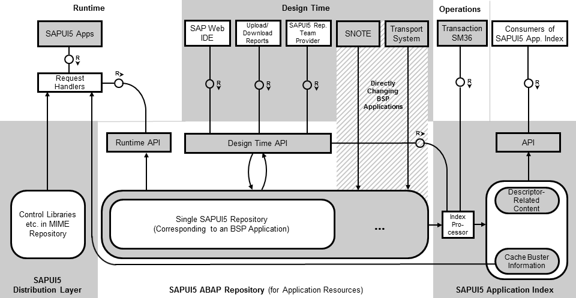

The following graphic shows an overview of the main tools, repositories, APIs, and parts
of the ABAP back end.

- The SAPUI5 ABAP repository
contains single SAPUI5
repositories (each represented by a BSP application). The SAPUI5 ABAP repository is
used to store SAPUI5
application resources.
- At design time, you can access the SAPUI5 ABAP repository
through the design time API using three different design time tools: SAP Web IDE,
special SAPUI5 repository
upload and download reports, and SAPUI5 repository team
provider.
- When applying SAP Notes with transaction SNOTE and using the transport system
to transport your changes, for example to quality systems, the BSP applications that
represent single SAPUI5
repositories are directly accessed (passing over the design time API).
- After carrying out content changes using the design time API, the index processor
recalculates the SAPUI5
application index.
Note
This doesn't happen for changes carried out using transaction
SNOTE or the transport system. To ensure periodic
recalculations of the SAPUI5 application
index for these changes too, use transaction SM36 to
schedule periodic runs of the index processor triggered by the report
/UI5/APP_INDEX_CALCULATE.
- The SAPUI5 application index
contains information related to the supported cache busting mechanisms and the
content of the descriptor for SAPUI5 apps, components, and
libraries. The content of the SAPUI5 application index can
be consumed by an API, for example, by SAP Fiori launchpad. Cache
busting-related information of the SAPUI5 application index can
also be used by the request handlers (at runtime, for SAPUI5 apps that are using
this mechanism).
- At runtime, the application resources needed by SAPUI5 apps are accessed
through a specific runtime API from the SAPUI5 ABAP repository,
whereas the SAPUI5
distribution layer artifacts (such as controls) are retrieved from the MIME
repository. The application resources and the SAPUI5 distribution layer
artifacts are served through SAPUI5-specific request
handlers assigned to the respective ICF nodes.
- Another part of the SAPUI5 ABAP
repository is the SAPUI5
text repository.